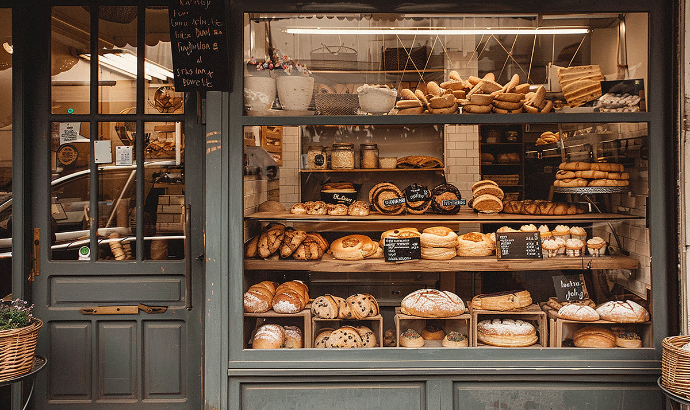
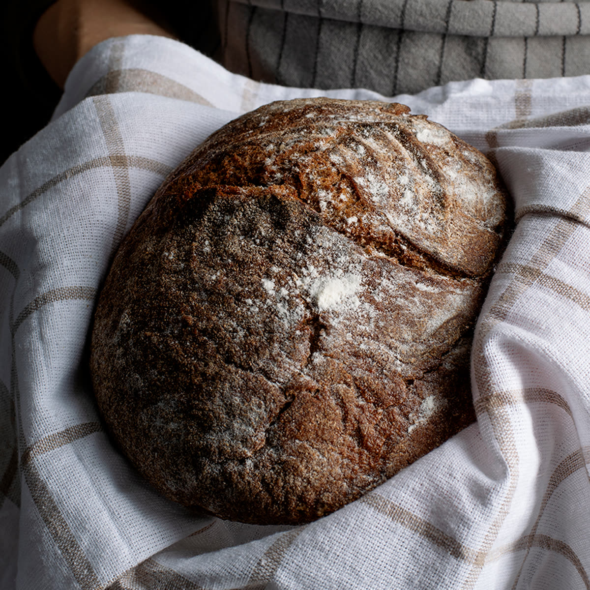

About North Star Bakery

Our Story
North Star Bakery started as a family kitchen that baked bread for friends and neighbors. People kept coming back, so we opened our small shop on Main Street. Today we still bake the same way, by hand and early in the morning, for the community that helped us get started.

Our Signature Loaf
This is the bread that started it all. We let the dough rest overnight so it gets its tangy flavor, then bake it hot until the crust turns deep brown.
Behind the Scenes
Our Sourcing Philosophy
We believe good bread starts with good ingredients. We buy our flour from regional mills, our eggs and dairy from nearby farms, and our fruit changes with the season. We keep our recipes simple, with no artificial preservatives.